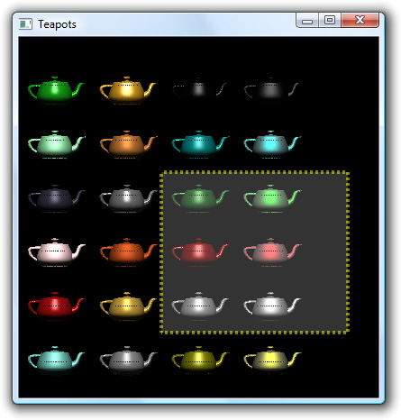

Often, we need to draw simple annotations on top of a complex 3D scene. If the scene is very complex, it may take several seconds to render it. To avoid rendering the scene repeatedly, whenever an annotation changes we could use X11 overlays or the built-in OpenGL support for overlays.
More recently, the availability of pbuffers and framebuffer objects has provided a more convenient and more flexible idiom for doing overlays. The basic idea is that we render the 3D scene onto an off-screen surface, which we bind to a texture. The texture is mapped onto the screen by drawing a rectangle, and the annotations are drawn on top. When the annotations change, we need to redraw only the rectangle and the annotations. Conceptually, this is very similar to what we did in Chapter 5 for the 2D Plotter widget.
To illustrate this technique, we will review the code of the Teapots application shown in Figure 20.3. The application consists of a single OpenGL window that shows an array of teapots and that lets the user draw a rubber band on top by clicking and dragging the mouse. The teapots do not move or change in any way, except when the window is resized. The implementation relies on a framebuffer object to store the teapot scene. A similar effect could be implemented using a pbuffer by substituting QGLPixelBuffer for QGLFramebufferObject.

class Teapots : public QGLWidget
{
Q_OBJECT
public:
Teapots(QWidget *parent = 0);
~Teapots();
protected:
void initializeGL();
void resizeGL(int width, int height);
void paintGL();
void mousePressEvent(QMouseEvent *event);
void mouseMoveEvent(QMouseEvent *event);
void mouseReleaseEvent(QMouseEvent *event);
private:
void createGLTeapotObject();
void drawTeapot(GLfloat x, GLfloat y, GLfloat ambientR,
GLfloat ambientG, GLfloat ambientB,
GLfloat diffuseR, GLfloat diffuseG,
GLfloat diffuseB, GLfloat specularR,
GLfloat specularG, GLfloat specularB,
GLfloat shininess);
void drawTeapots();
QGLFramebufferObject *fbObject;
GLuint glTeapotObject;
QPoint rubberBandCorner1;
QPoint rubberBandCorner2;
bool rubberBandIsShown;
};
The Teapots class is derived from QGLWidget and reimplements the high-level OpenGL handlers initializeGL(), resizeGL(), and paintGL(). It also reimplements mousePressEvent(), mouseMoveEvent(), and mouseReleaseEvent() to let the user draw a rubber band.
The private functions take care of creating the teapot object and of drawing teapots. The code is rather complex and is based on the teapots example in OpenGL Programming Guide by Jackie Neider, Tom Davis, and Mason Woo (Addison-Wesley, 1993). Since it is not directly relevant to our purposes, we will not present it here.
The private variables store the framebuffer object, the teapot object, the rubber band's corners, and whether the rubber band is visible.
Teapots::Teapots(QWidget *parent)
: QGLWidget(parent)
{
rubberBandIsShown = false;
makeCurrent();
fbObject = new QGLFramebufferObject(1024, 1024,
QGLFramebufferObject::Depth);
createGLTeapotObject();
}The Teapots constructor initializes the rubberBandIsShown private variable, creates the framebuffer object, and creates the teapot object. We will skip the createGLTeapotObject() function since it is rather long and contains no Qt-relevant code.
Teapots::~Teapots()
{
makeCurrent();
delete fbObject;
glDeleteLists(glTeapotObject, 1);
}In the destructor, we release the resources associated with the framebuffer object and the teapot.
void Teapots::initializeGL()
{
static const GLfloat ambient[] = { 0.0, 0.0, 0.0, 1.0 };
static const GLfloat diffuse[] = { 1.0, 1.0, 1.0, 1.0 };
static const GLfloat position[] = { 0.0, 3.0, 3.0, 0.0 };
static const GLfloat lmodelAmbient[] = { 0.2, 0.2, 0.2, 1.0 };
static const GLfloat localView[] = { 0.0 };
glLightfv(GL_LIGHT0, GL_AMBIENT, ambient);
glLightfv(GL_LIGHT0, GL_DIFFUSE, diffuse);
glLightfv(GL_LIGHT0, GL_POSITION, position);
glLightModelfv(GL_LIGHT_MODEL_AMBIENT, lmodelAmbient);
glLightModelfv(GL_LIGHT_MODEL_LOCAL_VIEWER, localView);
glFrontFace(GL_CW);
glEnable(GL_LIGHTING);
glEnable(GL_LIGHT0);
glEnable(GL_AUTO_NORMAL);
glEnable(GL_NORMALIZE);
glEnable(GL_DEPTH_TEST);
glDepthFunc(GL_LESS);
}The initializeGL() function is reimplemented to set up the lighting model and to turn on various OpenGL features. The code is taken directly from the teapots example described in the OpenGL Programming Guide referred to earlier.
void Teapots::resizeGL(int width, int height)
{
fbObject->bind();
glDisable(GL_TEXTURE_2D);
glEnable(GL_LIGHTING);
glEnable(GL_DEPTH_TEST);
glViewport(0, 0, width, height);
glMatrixMode(GL_PROJECTION);
glLoadIdentity();
if (width <= height) {
glOrtho(0.0, 20.0, 0.0, 20.0 * GLfloat(height) / GLfloat(width),
-10.0, 10.0);
} else {
glOrtho(0.0, 20.0 * GLfloat(width) / GLfloat(height), 0.0, 20.0,
-10.0, 10.0);
}
glMatrixMode(GL_MODELVIEW);
drawTeapots();
fbObject->release();
}The resizeGL() function is reimplemented to redraw the teapot scene whenever the Teapot widget is resized. To render the teapots onto the framebuffer object, we call QGLFramebufferObject::bind() at the beginning of the function. Then, we set up some OpenGL features and the projection and model view matrices. The call to drawTeapots() near the end draws the teapots onto the framebuffer object. Finally, the call to release() unbinds the framebuffer object, ensuring that subsequent OpenGL drawing operations don't go to our framebuffer object.
void Teapots::paintGL()
{
glDisable(GL_LIGHTING);
glViewport(0, 0, width(), height());
glMatrixMode(GL_PROJECTION);
glLoadIdentity();
glMatrixMode(GL_MODELVIEW);
glLoadIdentity();
glDisable(GL_DEPTH_TEST);
glClear(GL_COLOR_BUFFER_BIT);
glEnable(GL_TEXTURE_2D);
glBindTexture(GL_TEXTURE_2D, fbObject->texture());
glColor3f(1.0, 1.0, 1.0);
GLfloat s = width() / GLfloat(fbObject->size().width());
GLfloat t = height() / GLfloat(fbObject->size().height());
glBegin(GL_QUADS);
glTexCoord2f(0.0, 0.0);
glVertex2f(-1.0, -1.0);
glTexCoord2f(s, 0.0);
glVertex2f(1.0, -1.0);
glTexCoord2f(s, t);
glVertex2f(1.0, 1.0);
glTexCoord2f(0.0, t);
glVertex2f(-1.0, 1.0);
glEnd();
In paintGL(), we start by resetting the projection and model view matrices. Then we bind the framebuffer object to a texture, and draw a rectangle with the texture to cover the entire widget.
if (rubberBandIsShown) {
glMatrixMode(GL_PROJECTION);
glOrtho(0, width(), height(), 0, 0, 100);
glMatrixMode(GL_MODELVIEW);
glDisable(GL_TEXTURE_2D);
glEnable(GL_BLEND);
glBlendFunc(GL_SRC_ALPHA, GL_ONE_MINUS_SRC_ALPHA);
glLineWidth(4.0);
glColor4f(1.0, 1.0, 1.0, 0.2);
glRecti(rubberBandCorner1.x(), rubberBandCorner1.y(),
rubberBandCorner2.x(), rubberBandCorner2.y());
glColor4f(1.0, 1.0, 0.0, 0.5);
glLineStipple(3, 0xAAAA);
glEnable(GL_LINE_STIPPLE);
glBegin(GL_LINE_LOOP);
glVertex2i(rubberBandCorner1.x(), rubberBandCorner1.y());
glVertex2i(rubberBandCorner2.x(), rubberBandCorner1.y());
glVertex2i(rubberBandCorner2.x(), rubberBandCorner2.y());
glVertex2i(rubberBandCorner1.x(), rubberBandCorner2.y());
glEnd();
glLineWidth(1.0);
glDisable(GL_LINE_STIPPLE);
glDisable(GL_BLEND);
}
}
If the rubber band is currently shown, we draw it on top of the rectangle. The code is standard OpenGL.
void Teapots::mousePressEvent(QMouseEvent *event)
{
rubberBandCorner1 = event->pos();
rubberBandCorner2 = event->pos();
rubberBandIsShown = true;
}
void Teapots::mouseMoveEvent(QMouseEvent *event)
{
if (rubberBandIsShown) {
rubberBandCorner2 = event->pos();
updateGL();
}
}
void Teapots::mouseReleaseEvent(QMouseEvent * /* event */)
{
if (rubberBandIsShown) {
rubberBandIsShown = false;
updateGL();
}
}The mouse event handlers update the rubberBandCorner1, rubberBandCorner2, and rubberBandIsShown variables that represent the rubber band and call updateGL() to schedule a repaint of the scene. Repainting the scene is very quick, because paintGL() only draws a textured rectangle and a rubber band on top of it. The scene is rendered anew only when the user resizes the window, in resizeGL().
Here's the application's main() function:
int main(int argc, char *argv[])
{
QApplication app(argc, argv);
if (!QGLFormat::hasOpenGL()) {
std::cerr << "This system has no OpenGL support" << std::endl;
return 1;
}
if (!QGLFramebufferObject::hasOpenGLFramebufferObjects()) {
std::cerr << "This system has no framebuffer object support"
<< std::endl;
return 1;
}
Teapots teapots;
teapots.setWindowTitle(QObject::tr("Teapots"));
teapots.resize(400, 400);
teapots.show();
return app.exec();
}The function gives an error message and terminates with an error code if the system has no OpenGL support, or if it has no framebuffer object support.
The Teapots example gives us a taste of how we can bind an off-screen surface to a texture and draw onto that surface using OpenGL commands. Many variations are possible; for example, we could use a QPainter instead of OpenGL commands to draw on a QGLFramebufferObject or QGLPixelBuffer. This provides a way to render transformed text in an OpenGL scene. Another common idiom is to use a framebuffer object to render a scene and then call toImage() on the result to produce a QImage. The examples included with Qt show many of these idioms in action, both for framebuffer objects and for pbuffers.